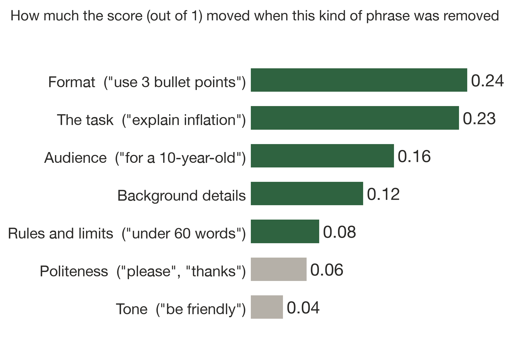

prompting-explained
A teaching tool that shows you the impact of each phrase in your prompt on the AI's answer.
Vihaan Manchanda
Duke University · Explainable AI
People in almost every field now use AI tools, but there is no tool that teaches prompt-writing literacy. AI developers learn what works through practice. Most users never do. In one study, non-experts wrote prompts the way they would instruct a person, and struggled to fix them when the answer went wrong (Zamfirescu-Pereira et al., 2023). Small wording changes matter too. Changing only a prompt's formatting moved one model's accuracy by up to 76 points (Sclar et al., 2024). A badly worded prompt wastes tokens and context, and gets a worse answer.
I built prompting-explained to teach how each word in a prompt contributed to the AI's answer. It removes one phrase at a time, reruns the prompt, and highlights the phrases that changed the result. On 240 test prompts across 8 everyday tasks, the phrases it ranked highest mattered clearly more than random ones, and its top pick repeated 78% of the time.
The goal is a training tool companies load with their own tasks, so staff learn what works on their real work.
People learn to prompt by trial and error. Chat tools return an answer but never show which words the model acted on, so nobody can tell which of their habits help. For a company rolling out AI, that costs three things:
Prompting guides offer general tips. They don't show people what their own prompt did.
Everyday users. People who just want the right answer. They see which of their words helped and which didn't, without needing to know how AI works.
Employees at companies adopting AI. Staff who are still learning to use AI practice on their own company's tasks, documents and rules.
Governance and compliance teams. Test whether a safety instruction, such as "leave out customer details", actually changes the answer before rolling it out.
Can removing one phrase at a time and rerunning the prompt show which words changed the AI's answer, in a way that is faithful and stable?
1Split the prompt into phrases
An AI splits the prompt into short phrases. Code keeps each phrase exactly as typed, typos included.
2Remove one phrase at a time and rerun
The full prompt runs 3 times, and each version with one phrase removed runs twice (occlusion*). Phrases that do nothing alone are also removed together once, in case they cover for each other.
3Score every answer against the task's goal
Each task turns its goal into a short checklist that code grades from 0 to 1. Every version of the prompt is graded the same way, so what matters is how the score changes.
4Measure each phrase's effect
A phrase's effect is how far the score moves when it is removed. If the score drops, the phrase helped. If it rises, the phrase hurt.
5Decide what each phrase did
Answers vary from run to run, so a change only counts if it is bigger than that phrase's noise floor*.
Whether an answer did what a phrase asked is rated by a second AI and averaged over the runs.
Task: write a prompt that gets the AI to explain inflation to your 10-year-old cousin. One user wrote this:
Hi there! Explain inflation to my 10-year-old cousin. Use exactly 3 bullet points. Use proper technical terms.
Green · "Explain inflation": without it, the AI asked what it should explain.
Red · "Use proper technical terms": the AI brought in terms like the Federal Reserve, interest rates and the CPI, too hard for a 10-year-old. Without it, the score rose from 0.41 to 0.65.
Grey · "Hi there!": a greeting gives the AI nothing to act on.
Green, red → worse answers · grey → wasted tokens · blue → hidden risk
This example pools two analyses of the same prompt: 6 runs of the full prompt and 4 per phrase.
It points at the right phrases. Removing the two phrases it ranked highest dropped the score by 0.30, against 0.18 for two random phrases (79 prompts, p = 0.0002). Its explanations are faithful.
It gives the same answer twice. A full rerun picked the same top phrase 78% of the time. Nearly tripling the reruns only raised agreement from 83% to 91%, so its explanations are stable.
It beat my own guesses. Before running anything, I wrote down what I expected each phrase to do. I matched the tool on 76% of phrases in clean prompts but only 52% in messy ones. Reading the answers, about 35 of the 41 disagreements were my mistakes.
WHAT IT SHOWED ABOUT PROMPTSOne model and my 240 test prompts, so these are observations, not rules.
Format and the task moved the score most, partly because some of my checklists reward a format the task never stated, like exactly 3 bullets. Politeness and tone barely moved it (chart, right).
Length limits matter for cost. In 60 prompts with a word limit, removing it made answers longer in 49, by 45% at the median.
Some instructions backfire. "dont guess" made the AI speculate more, in all 5 runs.

Average change in score when each kind of phrase was removed, across 741 phrases in 240 test prompts.
In these tests, the tool reliably pointed at the words that drove an answer, and it beat my own guesses. Whether it makes people write better prompts is the next thing to test.